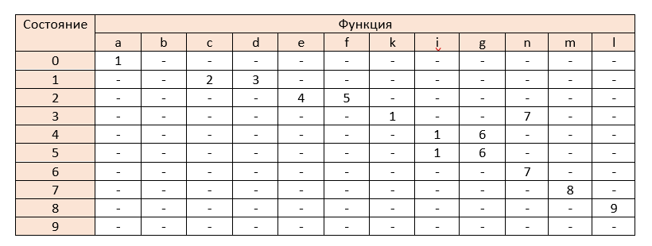

Отчёт по 4 лабораторной работе
В соответствии с вариантом задания необходимо:
1) Спроектировать граф конечного автомата
2) Выполнить программную реализацию алгоритма работы конечного автомата.
Встроить разработанную программу в интерфейс текстового редактора, созданного на первой лабораторной работе.
Пункт меню «Справка» должен содержать полное описание конечного автомата (множество состояний, входной алфавит,
начальное состояние, функции переходов в табличном виде и виде графа) и тестовые примеры.
Если задание подразумевает преобразование недетерминированного автомата к детерминированному и/или минимизацию
– необходимо описать оба конечных автомата
1. Проектирование конечного автомата
Описание конечного автомата
A = {S,∑,δ,So,F}
S = {0,1,2,3,4,5,6,7,8,9,10 }
So = 0
F = {10}
∑{
- a - поставить бутылку
- b - выбрать способ оплаты
- c - выбор наличного способа оплаты
- d - выбор оплаты по карте
- e - оплата купюрой
- f - оплата монетами
- g - сервер ответил
- i - автомат не принял купюру/монету
- k - серве не ответил
- n - оплата прошла
- m - налить молоко
- l - забрать молоко
}
δ{
- δ(0,a)=1
- δ(1,b)=2
- δ(2,c)=3
- δ(2,d)=4
- δ(3,e)=5
- δ(3,f)=6
- δ(4,g)=7
- δ(4,k)=1
- δ(5,i)=1
- δ(5,n)=8
- δ(6,i)=1
- δ(6,n)=8
- δ(7,n)=8
- δ(8,m)=9
- δ(9,1)=10
}
Граф конечного автомата
Таблица переходов конечного автомата

2.Программная реализация алгоритма работы конечного автомата
Для реализации конечного автомата был разработан следующий класс, а также функция анализа ввода.
3.Тестирование работы конечного автомата
Пример ввода верной последовательности для конечного автомата
Пример ввода неверной последовательности для конечного автомата
Пример ввода последовательности без перехода в конечное состояние
Пример ввода первой верной последовательности, второй неверной